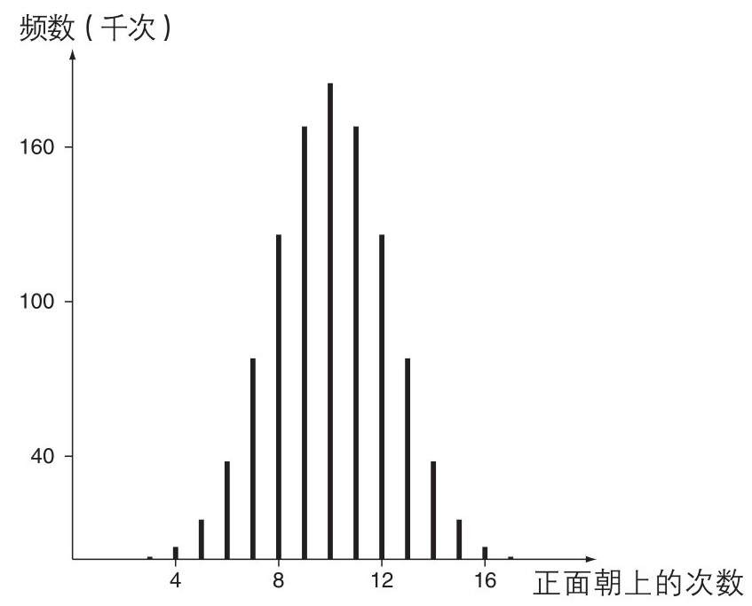
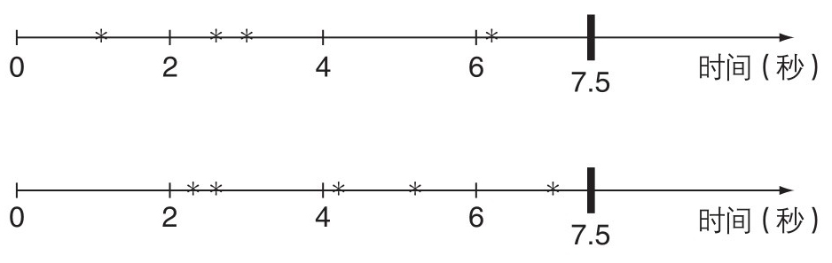
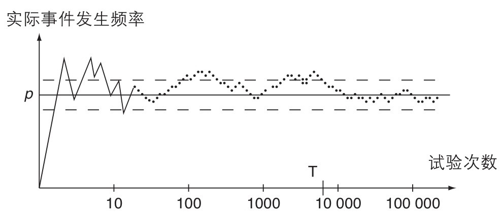

开端
在1600年左右的佛罗伦萨，有一种关注三个普通色子总点数的游戏。所有色子掷出1(即总点数为3)和所有色子掷出6(即总点数为18)这两种情况出现得最少，其他大多总点数都接近于这个范围的中间值。你应该能发现得到9点有6种方法(例如6 + 2 + 1、5 + 2 + 2，等等)，得到10点也是有6种方法。通常认为，这就“应该”使色子总点数为9和10出现的频率一样。但是一段时间之后，玩家们注意到总点数为10出现得比9明显多。他们就此向伽利略(Galileo)请教一个解释。
伽利略指出他们计数的方法有缺陷。将色子涂成红色、绿色和蓝色，并按涂色的顺序列举出结果。从3 + 3 + 3得到总点数为9需要三个色子具有相同的点数，只有一种方式能够使其发生，(3， 3， 3)。但是5 + 2 + 2的组合可以通过(5， 2， 2)、(2， 5， 2)或(2， 2， 5)中产生，所以这个组合倾向于出现得比前者频繁3倍；6 + 2 + 1通过(6， 2， 1)、(6， 1， 2)、(2， 6， 1)、(2， 1， 6)、(1， 6， 2)和(1， 2， 6)产生，所以这个组合有6种途径产生。一个合理的寻求不同总点数出现频繁程度的方法需要考虑这种因素，而且这种因素确实使得获得10点比9点有更多的方式。佛罗伦萨的赌徒们(Florentine gamblers)学习了关于概率的重要一课——一定要学会正确地 计数。
1654年夏天，帕斯卡(在巴黎)和费马(在图卢兹)就点数分配问题 (the problem of points)进行了一次通信。假设史密斯和琼斯约定进行一系列的比赛，首先赢得3局的是获胜者；但不幸的是，当史密斯领先琼斯的比分为2∶1时比赛必须中止。该如何分配赌金？
那时这样的问题已经被提出了至少150年了，仍没有令人满意的解答，但帕斯卡和费马各自独立地找到了一个解决方案，对任意的目标得分和任意的比赛意外终止时的比分，都能够在两人之间公平 地瓜分赌金。他们使用了不同的方法，但是得到了相同的结果，两人都对对方的才华表示赞赏。对上述具体的问题，应该按照3∶1的比例分配，史密斯得到3/4的赌金，琼斯得到1/4的赌金。
他们解法的关键是假设在未来的任何对局中两个玩家获胜是等可能的。他们就每一个玩家计算了能够使其获得最终胜利的可能的假想对局结果数量，并提议按照这两个数量的比值分配赌金。换句话讲，假设两人在接下来的游戏中旗鼓相当，赌金应该按照每个玩家在经历一系列对局后最终取胜的概率来分配。对概率的系统研究由此拉开了序幕。
这个问题能被概率的客观方法解决，但是帕斯卡考虑得更多。他提出了一个有关上帝是否存在的赌局。“上帝存在，或不存在，缘由无法回答。在无限远的彼岸掷一枚硬币，正面或者反面就要出现。你赌哪边？”
他提出，如果上帝存在，相信或者不相信带来的不同，就是在天堂获得无限的幸福与在地狱忍受无限的痛苦之间的区别；如果上帝不存在，相信或者不相信只会带来尘世生活中细小的差别。所以一个不可知论者应该强烈倾向于相信上帝存在。
在这个赌局中，“正面”或者“反面”出现的概率大小是具有个人色彩的选择，不能从对称性抑或计数证据中推导出。所以帕斯卡也是概率的主观方法的先驱者。
瑞士的伯努利家族
在17世纪和18世纪，来自巴塞尔的伯努利家族 [1] 的成员在数学(包括概率)领域取得了重要进展。家族内的竞争起到了鞭策作用：他们中的一个会提出难题，另一个就会回应，难题的提出者会说他发现了所谓的解决方案中的瑕疵，等等。
关于概率的游戏激发了许多对概率运作的早期关注。在这些游戏中，无论是掷色子、发牌，还是掷硬币，一些“试验”会在本质上相同的情况下被重复进行。之前提出过一个自然的问题：一个结果被观察到的概率和客观概率有什么关系？
雅各布·伯努利(Jacob Bernoulli)在其遗作《猜度术》(The Art of Conjecturing)中，用他的例子巧妙地进行说明，给出了一个答案。假设罐子中60%的球是白色的，其余的是黑色的，随机抽取一个球。伯努利证明，只要试验抽取至少25 550回，每一次试验中抽到白球的比例落在58% ~ 62%的范围外部 ，就会有至少1000次试验中抽到白球的比例落在这个范围内部 。不规范地说就是：在多次抽取的条件下，我们观察到白球的频率会压倒性地倾向于接近它的客观概率。
类似的分析过程适用于任意能在相同条件下不限次数地重复的试验，一个试验的结果不会对其他试验结果产生影响。每一次试验中，某些特定的结果代表着成功，它们的客观概率是一个固定的值p。这个概念现在被称为伯努利试验 (Bernoulli trials)。在p这个值附近取任意区间，你愿意它有多小就有多小(±2%或±0.1%，都无所谓)。然后给出你想要让成功的频率落在这个区间内部比落在其外部高多少(100倍还是100万倍，怎样都行)。伯努利的方法证明了只要试验重复足够多次，任意 这样的要求都会被满足。观察到的频率会像你期望的那样尽可能地接近于客观概率，只要给出充足的数据。这个断言被称为大数定律 (the Law of Large Numbers)。
在1975年，一个主要致力于促进概率和数理统计发展的国际学会被命名为“伯努利学会”，以向这个家族致敬。
亚伯拉罕·棣莫弗
亚伯拉罕·棣莫弗(Abraham de Moivre)以胡格诺派 [2] 难民的身份在英国定居，依靠国际象棋和他的概率知识谋生。艾萨克·牛顿(Isaac Newton)那时已经50多岁而且事务非常繁忙，为了岔开有关数学的咨询，他说：“去找棣莫弗吧，他比我对这些事情了解得更清楚。”棣莫弗的《机会的学说》(Doctrine of Chances)在1718年以英语出版，1738年的第二版包含了伯努利工作中的主要进展。了解他的成就要思考一个具体的问题：如果一个公正的色子被投掷1000次，我们能合理地预期数字6的产生频率与平均频率之间有多大偏差吗？
棣莫弗提出了一个对这类问题具有广泛应用的公式。他高超的洞察力表现在，他意识到数字6的实际数量与期待的平均数量之间的偏差，可以用投掷次数的算术平方根 来进行最适当的描述。
如何夸大这个发现的重要程度都不为过。当你听说一个民意测验(opinion poll)中一个政党的支持率是40%，它经常会附加一个暗示，这只是一个估计，真实的支持率“非常可能”在一个范围中，比如38% ~ 42%。这样的区间宽度告诉你最初数字40%的精确度，而如果你想要更高的精确度，就需要更大的样本：这个平方项意味着要将精确度变为2倍，样本需要扩大4倍!我们有一个“报复式”的收益递减法则——要达到原来的2倍效果，我们必须投入原来的4倍精力。
棣莫弗的方法可以用考察一个公正的硬币投掷20次时有多少次正面朝上来说明。基于所有的例如正正正反正……正反正反这样的，长度为20的序列都是等可能出现的，我们可以绘制出图1。其中垂直条的高度表示大约100万种序列中有多少个恰好包含0、1、2、……19、20个正面。这些数字各自的客观概率就正比于这些高度。棣莫弗证明了经过这些竖条顶点的最佳拟合的光滑连续曲线非常接近于一个特别的形状，现在通常称之为正态分布 (normal distribution)。

图1 20次投掷中正面朝上的相对频率
这种曲线会生成于所有的多次掷硬币过程中，并且还可以包括掷出正面的概率不等于1/2的情况。所有曲线之间有一个简单的关系，所以棣莫弗可以就一个基本的曲线制作一个简单的数表，并能在任何情况下使用。整体的成功频率在一个确定的限制范围中，现在就能够简单地获取对这样的事件的发生比例的估计——需要的仅仅是获胜的概率和将要进行的试验的次数。将一个公正的色子掷200次，你想知道数字6出现次数在30~40间的可能性有多大吗？或者一个公正的硬币在100次投掷中掷出60次以上的正面的可能性有多大？没问题——棣莫弗有解决方案。
假设我们知道一群人死亡时的年龄，所有人都活到了至少第50个生日。棣莫弗的工作可以回答这样的问题：“如果一个50岁的人在70岁之前死亡是更有可能的，我们能够观察到这些数目的各种变化的可能性有多大？”虽然这十分有用，但是它不能回答新兴的人寿保险业提出的关键问题：“我们有多么确信一个50岁的人在他70岁之前即死亡是更有可能的？”
逆概率
托马斯·贝叶斯(Thomas Bayes)是一个在数学领域有建树的长老会牧师，他的思想现在比在其生前更受重视。他的《机遇问题的解法》(Essay Towards Solving a Problem in the Doctrine of Chances)在他死亡三年后的1764年出版，给出了初步处理主观概率的一般方法和从数据中推断概率的保险精算师问题的一个解决方法。这本书也包含了一个处理概率的重要工具，被称为贝叶斯法则 (Bayes’ Rule)。
为了举例说明这个法则，设想我们掷一个公正的色子两次。已知第一次掷色子点数是3，很容易地就能够得到总点数是8的概率，因为这个事件会在第二次投掷点数为5时发生。我们不假思索地就能给出解答为1/6。但是将问题调转一个方向，设问：给出总点数是8，第一次掷出3的概率是多少？答案远远不那么简单了，但是我们可以应用贝叶斯法则来得到结果。在掷色子的标准模型下这个概率为1/5。
对于刑事审判中处理证据的方法，逆概率 (inverse probability)这个概念至关重要。假设在犯罪现场找到的指纹被鉴别为属于一个已知的人——史密斯。如果史密斯是无罪的，发现这个证据的概率很可能是非常低的。但是法院判决的依据不是“已知史密斯是无罪的，发现这个证据的可能性有多大”而是“已知发现了这个证据，史密斯无罪的可能性有多大”。贝叶斯法则是获得答案唯一合理的方法。我们将会在后面的章节中看到这个法则是如何帮助我们做出正确决定的。
贝叶斯展示的洞察力在很多年中被忽略了，但是他的确指出了中心问题：如果在一系列的伯努利试验(例如掷色子)中，成功的概率是未知的，但是试验和成功的次数都分别是已知的，这个不可知的概率落在指定区间内的可能性有多大？而另一位极其优秀的数学家拉普拉斯的计算优于贝叶斯。
从1774年试探性的开始到1812年的理论综合体，拉普拉斯逐渐地完善着他的分析，并最终给出了解答贝叶斯问题的一系列明晰的公式。例如，利用巴黎男性和女性的出生人口数目，他得出结论，毫无疑问男性出生的概率高于女性——他估计这结论错误的概率是10-42 。
贝叶斯被安葬在伦敦的邦丘原野公墓(Cemetery of Bunhill Fields)，在皇家统计学会(the Royal Statistical Society)附近。其墓地曾经被修复过，来表达全世界统计学家对贝叶斯的敬意。
中心极限定理
将一些伯努利试验的结果写成由胜利(Success)和失败(Failure)组成的序列，例如FFFSFFFSSFSFF……现在将每个S用数字1代替，每个F用数字0代替，得到0 001 000 110 100……这表明了一个巧妙地理解这些试验中胜利的总数的方式：序列中的这些数字的和 (同意吗？)。棣莫弗利用他所谓的正态分布曲线，给出了一个描述这个和的分布的良好近似方法。
对于一个巨大的数值序列，我们要考虑的可能只是其中随机变化的各个值的和。例如，负责垃圾处理的政府部门主要感兴趣的是整个城镇中的垃圾总量，而不是来自每个家庭的数量。当一位园丁播种红花菜豆时，他关心的不是每个豆荚的大小，而是总产量。一个赌场基于它的全部赢得的钱来评估其经济收益，不论个别赌徒的收益如何。将着眼的事物看作大量随机数据的和，这经常是卓有成效的。
拉普拉斯拓展了棣莫弗的工作以便能涉及像这样的情况。他建立了中心极限定理 (Central Limit Theorem)，该定理说明了在很多情况下，大量随机数据的和是棣莫弗的正态分布的理想近似状态。我们不需要某个单独数据如何变化的细节，整体数据 变化的模式会紧密地贴合这个正态法则。
为了利用这个想法，我们只需要两个数字：第一个是全体数据的平均值，第二个是一个简单地表示它的变化程度的数据。知道这两个数据，任何一个概率都能够从棣莫弗的表格中找到。
下面谈到卡尔·弗里德里希·高斯(Carl Friedrich Gauss)，他是和牛顿、阿基米德(Archimedes)并列的顶级数学天才。当时他正在研究如何处理观测恒星和行星位置时产生的误差。他提出，平均而言误差为0——观测中向左偏差和向右偏差是等可能的——并且 误差大小遵循这个正态分布，他因为这个方法在数学上很简洁而使用它。但是拉普拉斯看到高斯的书时，将这个结果引用到了自己的书中，同时提出，因为一次观测中的全部 误差以许多随机因素堆积总和的形式出现，这样误差应该 遵循正态分布法则。高斯蹩脚的理由“数学上的便利”被拉普拉斯更加有说服力的“数学理论表明……”所替代。
“正态”这个术语应用在这个分布上是不恰当的。它暗示我们应该预期我们遇到的任何数据都遵循这个形式，但是远非如此。为了避免这种暗示，并且为了纪念一个伟大的人，我们将会转而使用另一个术语高斯分布 (Gaussian Distribution)。如果你可以说服自己，你关注的值可以貌似可信地被当作大量随机的较小数字的和，这些较小的数字的来源都是不相关的，那么这个中心极限定理告诉我们可以预期这个值遵循高斯分布。
观测中的误差真的遵循这个规律吗？亨利·庞加莱(Henri Poincaré)——对数学各分支具有全面知识的最后一位数学家——说：“人人都相信它，因为数学家误以为这是观测中的事实，而观测者认为这是个数学原理。”
西莫恩·德尼·泊松
西莫恩·德尼·泊松(Siméon Denis Poisson)出名是因为一个含有他名字的分布 ——概率在一个平均值周围变化的方式。在物理学家欧内斯特·卢瑟福(Ernest Rutherford)及其同事的工作中——计算7.5秒长的时间间隔内有多少个α粒子从放射源中发射——相关的例子出现了。这个数字从0到十几不等，平均值稍小于4。图2展示了两个经典的实验，说明(在这些情况中)有四五个粒子发射。卢瑟福认为这些发射事件都是随机的。

图2 α粒子的发射时间
将7.5秒切成极多个极小的时间间隔，小到我们可以忽略其间发生一次以上发射的概率。除了几个发生了一次发射，其他所有的小间隔都没有出现发射这一事件。在各个小间隔之中，将一次发射事件看作游戏胜利，所以粒子发射的总数就是胜利的次数——又是伯努利试验。
极小间隔胜利的概率实际上和其长度成比例，所以随着单个间隔长度的缩小，间隔的数目增多，每一个间隔发生胜利事件的概率减小。泊松计算出了小区间长度缩小至0的过程中，发生0、1、2……次发射的全部的确切概率。
这个泊松分布 (Poisson Distribution)就经常出现在我们计算事件“随机”发生概率的时候，至少是以一种良好近似的方式。它恰当地描述了卢瑟福的实验数据；它适用于第二次世界大战中投掷在伦敦南部不同地区的炸弹数量；它看起来是一本书中每1000个字中错印字数的有效模型。如果你同时从两个洗好了的牌堆发牌，正面朝上，平均而言你会发现发牌恰好有一次是一样的，但是实际的匹配次数会非常接近于泊松分布。有一个可怕的例子，在一项长达20年，涉及几代普鲁士特兵团学员的追踪调查里，被自己的马踢死的军官数量也满足这个分布。
所有这些例子都符合一个相同的模式：大量的机会，每个机会中事件发生的概率很小。每当你正在研究的现象符合这种模式，泊松分布就很可能对它有用。
俄罗斯学派
一个数学定理具有这样的特征：如果某一个假设是成立的，那么一个预期的结论就会产生。我们主要的兴趣在于应用这个预期的结论，所以所需的假设最好不要太复杂。有时候预期的结论只存在于非常具有限制性的假设的情况下，或者极其难被证明：之后的研究者也许会找到使用相同假设的更简单的方法，或者在较少的限制性条件下得到相同的结论。最好的情况是结论在非常宽松的假设成立时，能被简短而优美地证明。巴夫尼提·切比雪夫(Pafnuty Chebychev)的工作给出了这种理想情形的良好案例。
切比雪夫展示了如何在更广泛的情况中应用大数定律。最初的大数定律和伯努利试验有关，它描述了在一系列试验中事件发生次数的比例能够多么合适地用于估计事件发生的概率。如果我们想估计入伍士兵的平均身高，或者一个家庭一周的消费，我们似乎可以很明显地从相关人员中抽取合适的样本。但是这种估计有多合适呢？切比雪夫的工作给出了误差足够小以使得估计可靠的概率。
很多统计结果都是这些想法的应用。
切比雪夫最知名的学生是安德雷·马尔可夫(Andrey Markov)，马尔可夫的教学启发了又一代极有天赋的俄国人。马尔可夫将他的想法应用于诗歌和文学作品。在将亚历山大·普希金(Aleksandr Pushkin)的《叶甫盖尼·奥涅金》(Eugene Onegin)中的元音字母(vowel)和辅音字母(consonant)分别替换为字母v和c之后，马尔可夫得到了一个只含有这两个字母的序列。在原始的基里尔字母 [3] 中，元音字母占有43%的文字比例。在一个元音字母之后，另一个元音字母出现的频率是13%，而在辅音字母之后，元音字母出现的频率是66%。在预测一个字母之后的字母是元音还是辅音的过程中，他发现，已知当前的字母时可以忽略它前面所有的字母，因为它们基本不构成影响。
这个“可以忽略”的特性广泛存在。有一些例子：赌徒手中的一系列连续的赌金数额；特拉维夫(Tel Aviv)每天的天气(干或者湿)；在每一个顾客离开时队列的长度；连续世代的基因组成；两个相连的容器中的气体扩散过程。如果知道序列中的前一个值，要预测随机变化序列的下一个值的时候，我们都可以忽略更前面的那些值，那么这个序列被称为具有马尔可夫性质 (Markov property)。描述这种序列的理论已经很好地发展起来了，这些理论也是许多概率成功应用的基础。
马尔可夫在政治上非常活跃，对数学史也知之甚详。1913年，俄国政府组织了罗曼诺夫改革300周年的庆祝活动，马尔可夫相应地开展了对伯努利发现第一个大数定律200周年的纪念活动。
这里我偏离一下主题，讨论一下在20世纪早期，法国人埃米尔·博雷尔(émile Borel)的工作。回想伯努利试验中的大数定律：在大量试验中，实际事件发生的频率有极大的特别接近于事件发生概率的可能性。但是这仍然留下了这样的可能：在无限次的试验中，实际事件发生的频率极其偶尔地会落到事件发生频率附近任意给定的公差带之外。但是博雷尔的工作完全消灭了这种概念难题。任意给定公差带，一定会有一个时刻(我们不知道什么时刻，但是的确有那么一个时刻)，在这个时刻之后，实际事件发生的频率就会永久地停留在公差带内部 。这被称为强大数定律 (the Strong Law of Large Numbers)。

图3 强大数定律图示。p是事件发生的概率，虚线表示公差带。在T次试验之后，实际的事件发生的频率永久地停留在公差带内部
这个强大数定律也会延伸到更广阔的情境中。我们可以将大数定律的含义浓缩到一个不正式的习语中：
从长远来看，平均统领一切。
在1924年，亚历山大·辛钦(Alexander Khinchin)发表了命名极佳的《重对数律》(Law of the Iterated Logarithm)。就像伯努利和拉普拉斯的早期工作一样，这个理论应用于一个以和的形式出现的随机数量时，它可以给出更加精确的有关这个和会多么接近其平均值的信息。
在大约300年中，概率工作的前沿进展都是来自一些特别的方法。然而到了1933年，杰出的苏联科学家安德雷·柯尔莫哥洛夫(Andrey Kolmogorov)使用了近期发展出的测度论 (measure theory)中的理念，将概率科学确立在了令人满意的逻辑框架中。所有已知的理论都可以重新容纳进柯尔莫哥洛夫的设定中，并能给出精确程度作为后续计算过程的催化剂。
柯尔莫哥洛夫和辛钦还有他们的学生鲍里斯·格涅坚科(Boris Gnedenko)一起极大地拓展了拉普拉斯关于随机数量和的工作。提高纺织业和其他制造业中机器的可靠性的方法，生产线上产品的质量控制，还有解决拥堵导致的问题都是他们研究的动机。
柯尔莫哥洛夫是一个卓越的研究者和教育者。他在1987年去世，当时的苏联总书记米哈伊尔·戈尔巴乔夫(Mikhail Gorbachev)还调整了自己的工作日程，以便能够出席葬礼。
更近的近代
战争经常会驱动科学发展。1939—1945年的世界冲突促进了运筹学的发展，其中许多成就都起源于对概率论理念的合理利用。为了使一艘补给船不被敌军潜艇击沉的概率最大，一系列数据的组合和计算给出了舰队比单艘船更好，大舰队比小舰队更好的结论。当这个结论被付诸实施，损失就显著地降低了。布莱切利园(Bletchley Park)的密码解读工作现在大概已经广为人知了。然而我们经常忽视贝叶斯公式在确定恩尼格玛密码机(Enigma machines)卷轴最有希望的布置方式中的应用。
在1950年，威廉·费勒(William Feller)出版了一本介绍概率的著作，并在1957年和1968年再版。这本书是我心目中有史以来最好的非虚构著作。凭借着直觉和严密论证的结合，这本书直接地或者间接地引发了人们对这门学科的巨大兴趣。随后，乔·杜布(Joe Doob)使用术语“鞅 ”(martingale，这个词原本指每次损失后将赌金加倍的投注策略)来描述那些在未来某时刻的平均值与现在的值(大致上)相等的随机量。他揭示了鞅的主要性质并给出了一些密切相关的概念：这些工作普遍有用，因为它指出许多有实用性的随机量都会包含在这个理论研究的范畴中。之后我们会举例说明概率这个概念是如何在一系列领域中被有效地应用的。
许多专攻概率的学术期刊已经发行，其中一些还产生了分支期刊，从来没有听说它们缺少可以发表的材料。现代计算机的算力已经转变了计算概率的模式：它们的运算速度和存储容量极大地拓展了可解决问题的范围。在早期，许多概率问题只受一个因素影响，比如说时间或者距离，人工的精确计算总是可能的；而现在，那些概率随时间、空间的三维和其他因素的影响而变化的复杂问题也已经被成功解决了。
即便如此，使沟通交流更便利才是计算机对概率论发展最巨大的影响。TeX [4] 语言已经成为数学和许多科学写作的标准语言框架。研究者在互联网上发布他们的想法和观点，学术文章可以在家中或者办公室中通过万维网(the World Wide Web)轻易地取得。
[1] 伯努利家族(The Swiss Family Bernoulli)来自瑞士的一个商人和学者家族，有很多艺术家和科学家出自其中。
[2] 胡格诺派(Huguenot)， 16世纪至17世纪法国基督新教归正宗的一支教派，1685年被法王路易十四宣布为非法。
[3] 基里尔字母(Cyrillic alphabet)又称西里尔字母、斯拉夫字母，是在使用斯拉夫语族语言的大多数民族中通行的字母书写系统。
[4] 正式标志为TEX，中间的E有点下沉，但在无格式纯文本中写为TeX。